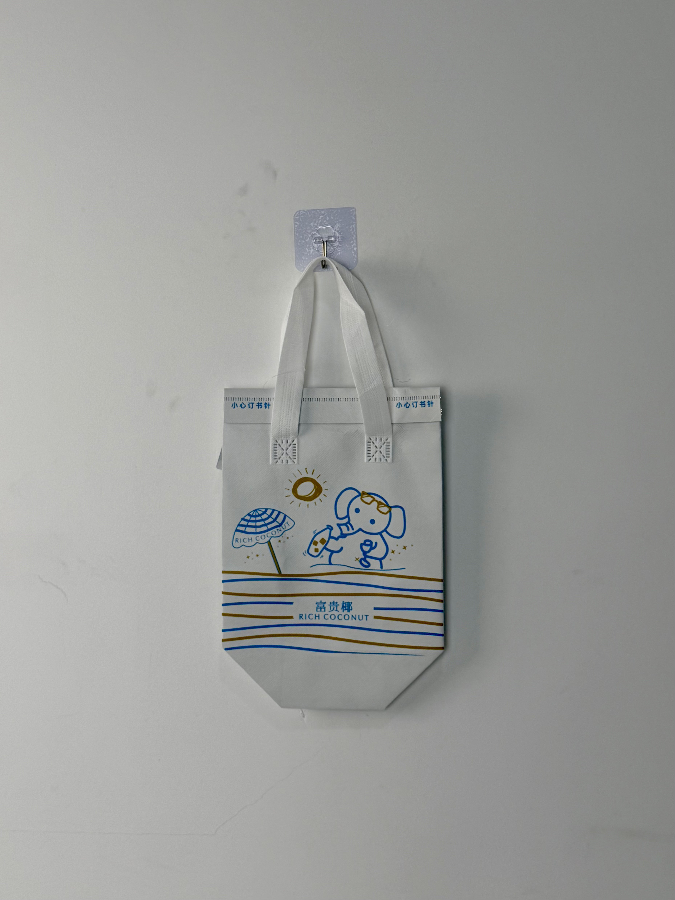

A charming white insulated tote for Rich Coconut featuring beach-vacation illustration and playful line-art branding that captures the carefree tropical spirit of China's fastest-growing coconut beverage chain.

Rich Coconut is an emerging Chinese beverage brand specializing in fresh coconut water, coconut milk tea, and tropical fruit blends. Positioned as a healthier alternative to traditional milk tea, the brand has cultivated a loyal following among health-conscious Gen-Z consumers who appreciate natural ingredients and Instagram-worthy aesthetics. The brand's visual identity centers on clean whites, tropical blues, and playful illustration — a visual language that differentiates it from the neon-saturated competition.
Our customers come for the coconut, but they stay for the vibe. Every touchpoint needs to feel like a beach vacation in the middle of the city.
The thermal bag project addressed summer peak-season delivery demand, when cold coconut beverages face the greatest temperature challenges during transport. The bag needed to maintain beverage chill while communicating the brand's distinctive tropical personality — a combination of functional performance and emotional design.
The design language draws from vintage travel postcards and children's book illustration. A cartoon character enjoys a coconut drink under a striped beach umbrella, with hand-drawn sun and wave motifs creating a narrative scene rather than abstract decoration. The blue-and-gold color palette evokes ocean and sand without relying on cliched tropical imagery.
Playful beach scene with character, umbrella, and sun creates emotional vacation association.
"RICH COCONUT" framed by gold wave lines reinforces the ocean-tropical brand narrative.
White field provides Instagram-friendly minimalism while making blue illustration pop visually.
"小心订书针" (Caution: Staples) at top edge demonstrates thoughtful user-safety communication.
The bag was engineered for cold coconut-beverage delivery during China's hot and humid summer months. Fresh coconut water and milk-based drinks require consistent cold retention to prevent separation and flavor degradation. The illustration-focused design also demanded print precision that could reproduce fine line-art detail on non-woven fabric.
| Parameter | Specification | Test Standard |
|---|---|---|
| Cold Retention | < 10°C for 40 min (35°C ambient) | Internal Protocol |
| Load Capacity | 3 kg | ASTM D5265 |
| Print Line Width | 0.3mm minimum | Internal Protocol |
| Seam Strength | > 20 N/cm | ASTM D1683 |
The illustration-focused design required screen-printing precision capable of reproducing fine line-art on textured non-woven fabric. The five-stage workflow balanced print quality with summer-season production timelines.
100gsm white non-woven PP produced with optical-brightening masterbatch. Corona treatment at 42 dynes for ink adhesion.
Character illustration, umbrella, and wave lines printed with blue plastisol. 120 mesh screen for fine line reproduction.
Sun, wave lines, and brand elements printed with gold plastisol. Flash-dried between colors to prevent bleeding.
3mm EPE foam bonded to aluminum-PE barrier. Matte surface lamination preserving illustration visibility without glare.
Ultrasonic die-cutting with sealed edges. White handles attached with reinforced stitching. Line-art clarity inspection per batch.
The thermal bag was deployed across Rich Coconut's summer delivery operations in tier-1 and tier-2 cities, replacing plain courier bags with branded illustrated carriers. Rollout coincided with the brand's peak coconut-water season and a social-media campaign encouraging customers to photograph their "vacation moment" deliveries.
Key Insight: The illustration proved so popular that customers began requesting the bag as a standalone purchase. Rich Coconut subsequently launched a limited-edition merchandise line featuring the same beach character on stickers, phone cases, and apparel — demonstrating that strong packaging illustration can spawn entirely new revenue streams.
The white field color proved strategically effective in delivery environments. Unlike competitors' dark or neon bags that blended into urban backgrounds, the bright white created instant visual pop — making Rich Coconut deliveries easy to spot on crowded pickup racks and in courier hands.
Three design decisions differentiate this coconut-beverage bag from standard drink-delivery packaging. Each addresses specific challenges in China's competitive fresh-beverage market.
Most beverage bags rely on logos, patterns, or color fields. Rich Coconut's beach scene tells a story — a character enjoying a drink under the sun — creating emotional resonance that abstract branding cannot achieve. Customers don't just receive a drink; they receive a miniature vacation narrative.
China's beverage-delivery landscape is saturated with pinks, greens, and blacks. The clean white field creates visual calm and premium association, standing out through restraint rather than saturation. White also signals the "pure natural" ingredient positioning that coconut water brands emphasize.
The two-color line-art approach ensures that the illustration reproduces consistently across print variations, fabric textures, and production batches. Unlike complex photographic printing that suffers from registration drift, line art maintains its charm even with minor production variation.
We design and manufacture illustrated thermal bags for fresh-beverage brands. From narrative illustration to cold-chain engineering, we create packaging that customers want to photograph and share.